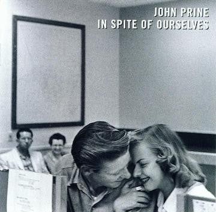

Album 1: Zach Bryan by Zach Bryan
This album, Zach Bryan, has a special place in my heart for a lot of reasons not only is that Bryan one of my favorite artists and I not only care a lot about his lyrics but also his music and acoustic Talent is something that I am in awe of. this album came out on August 25th 2023 and not only are a lot of the lyrics and songs incredibly meaningful to me and got me through a lot of trials and tribulations but more importantly it came at a time where I really needed it. Some of my favorite songs include fear and Fridays which is actually a poem I remember everything, tournequit and smaller Acts. This is one of my favorite albums and carries a lot of importance to me. The music, lyrics, and overall experience of this album have left a lasting impact on me.

Album 2: Boys of Faith by Zach Bryan
This album was a surprise release on September 22nd of 2023. It includes songs with Noah Khan and Bon Iver who are both some of my favorite artists. the song Boys of faith feet Bon Iver and Sarah's place feet Noah Khan are definitely some of my favorites on the album. these songs mean a lot to me because they have topics of friendships and staying with somebody through their hard times which is very meaningful to me and something that always makes a song important and stand out to me.

Album 3: In Spite of Ourselves by John Prine
The album In Spite of Ourselves by John Prine holds a very special place in my heart. not only are the lyrics incredibly meaningful but more importantly this is my parent's wedding song. I grew up listening to it and it's connected with some of my most cherished memories. Not to mention it reminds me of the unconditional and Silly Love that my parents share for each other. one of the reasons this song is so meaningful to me is because I actually have a line tattooed on my body. the line Against All Odds means a lot to me because it explains the importance of no matter what comes your way never to take yourself or anyone else too seriously. My parents have been together for over 20 years and yet Nothing Stops them from cracking a joke giggling or ending an argument with a silly comment to lighten the mood and remind everyone That Against All Odds there's always something to smile about.
